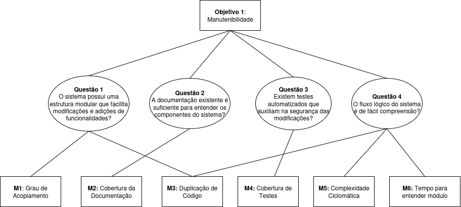
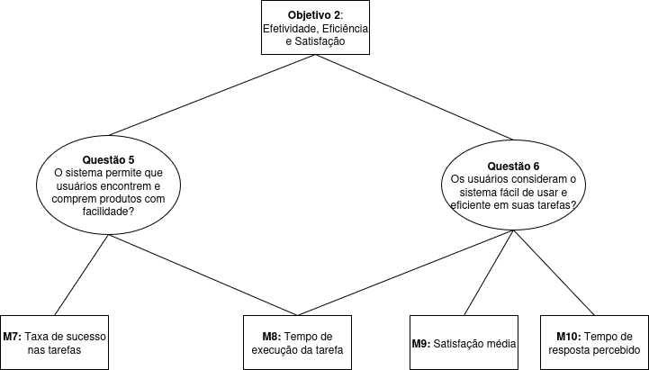

GQM – Fase Definição
Objetivo de negócio do AgroMart
O Agromart tem como propósito oferecer aos pequenos agricultores mais segurança no escoamento de sua produção, além de conectar consumidores que buscam uma alimentação saudável e de qualidade aos seus produtos.
Objetivo de Medição 1
| Elemento | Descrição |
|---|---|
| Analisar | AgroMart |
| Para o propósito de | avaliar |
| Com respeito a | manutenibilidade |
| Do ponto de vista do | desenvolvedor |
| No contexto da | disciplina de Qualidade de Software |
Questões e Hipóteses
-
Q1: O sistema possui uma estrutura modular que facilita modificações e adições de funcionalidades?
Hipótese Q1: O sistema apresenta uma estrutura modular com baixo acoplamento entre componentes, permitindo a realização de modificações e adições com impacto limitado e localizado. -
Q2: A documentação existente é suficiente para entender os componentes do sistema?
Hipótese Q2: A documentação cobre os principais componentes do sistema de forma clara e atualizada, com a presença de README, diagramas de arquitetura, comentários no código, entre outros, permitindo que desenvolvedores compreendam seu funcionamento sem depender de leitura extensiva do código. -
Q3: Existem testes automatizados que auxiliam na segurança das modificações?
Hipótese Q3: O sistema possui uma cobertura razoável de testes automatizados, o que contribui para a detecção de regressões e aumenta a confiança ao realizar modificações. -
Q4: O fluxo lógico do sistema é de fácil compreensão?
Hipótese Q4: O código possui baixa complexidade e está organizado de forma clara, facilitando o entendimento da lógica de execução pela equipe.
Abstraction Sheet
Foco da Qualidade
|
Fatores de Variação
|
Hipótese de Baseline
|
Impacto dos Fatores de Variação
|

Métricas para Objetivo 1
M1: Grau de acoplamento
M2: Cobertura da documentação
M3: Duplicação de Código
M4: Cobertura de testes
M5: Complexidade ciclomática
M6: Tempo para entender módulo
Objetivo de Medição 2
| Elemento | Descrição |
|---|---|
| Analisar | AgroMart |
| Para o propósito de | entender |
| Com respeito a | efetividade, eficiência e satisfação do usuário |
| Do ponto de vista de | usuário final |
| No contexto da | disciplina de Qualidade de Software |
Questões e Hipóteses
-
Q5: O sistema permite que usuários encontrem e comprem produtos com facilidade?
Hipótese Q5: A interface é intuitiva e permite que os usuários realizem ações como busca, seleção e compra de produtos em poucos passos, com baixo índice de desistência. -
Q6: Os usuários consideram o sistema fácil de usar e eficiente em suas tarefas?
Hipótese Q6: Supõe-se que a maioria dos usuários perceba o sistema como fácil de usar, com baixa necessidade de suporte e altos níveis de satisfação, o que será validado por meio de pesquisas de usabilidade e coleta de feedback.
Abstraction Sheet
Foco da Qualidade
|
Fatores de Variação
|
Hipótese de Baseline
|
Impacto dos Fatores de Variação
|

Métricas para Objetivo 2
M7: Taxa de sucesso nas tarefas
M8: Tempo de execução da tarefa
M9: Satisfação média
M10: Tempo de resposta percebido
Tabela de Contribuição
| Matrícula | Nome completo | Contribuição (%) |
|---|---|---|
| 221021886 | Cássio Sousa dos Reis | 20% |
| 180113097 | Daniel Coimbra dos Santos | 20% |
| 202023663 | Gabriel Basto Bertolazi | 20% |
| 221037803 | Letícia Kellen Ramos Paiva | 20% |
| 170154319 | Philipe de Sousa Barros | 20% |
Changelog v1.2 GQM (05/07/2025)
Algumas métricas de manutenibilidade inicialmente consideradas foram descartadas. Abaixo estão os principais motivos:
- Facilidade de extensão
Métrica subjetiva e difícil de quantificar sem envolvimento direto dos desenvolvedores originais. Seria mais adequada em estudos observacionais ou entrevistas. - Testes quebrados após mudanças
Exige execução contínua de testes automatizados em múltiplos commits, o que não é possível sem histórico e pipeline ativo de CI. - Tempo para detectar falhas
Depende de logs históricos de bugs ou dados operacionais de produção, que não estão disponíveis para a equipe avaliadora. - Padrões arquiteturais
A avaliação de padrões arquiteturais exige análise qualitativa e conhecimento profundo do sistema e suas decisões de design, o que foge ao escopo da análise automatizada e objetiva.
Histórico de Versão
| Versão | Data | Autor | Descrição | Revisor |
|---|---|---|---|---|
| 1.0 | 26/05/2025 | Cássio Reis | Criação do documento | Daniel Coimbra |
| 1.1 | 26/05/2025 | Daniel Coimbra | Adição dos diagramas de Objetivo | - |
| 1.2 | 05/07/2025 | Cássio Reis | Revisão das métricas de manutenibilidade | - |